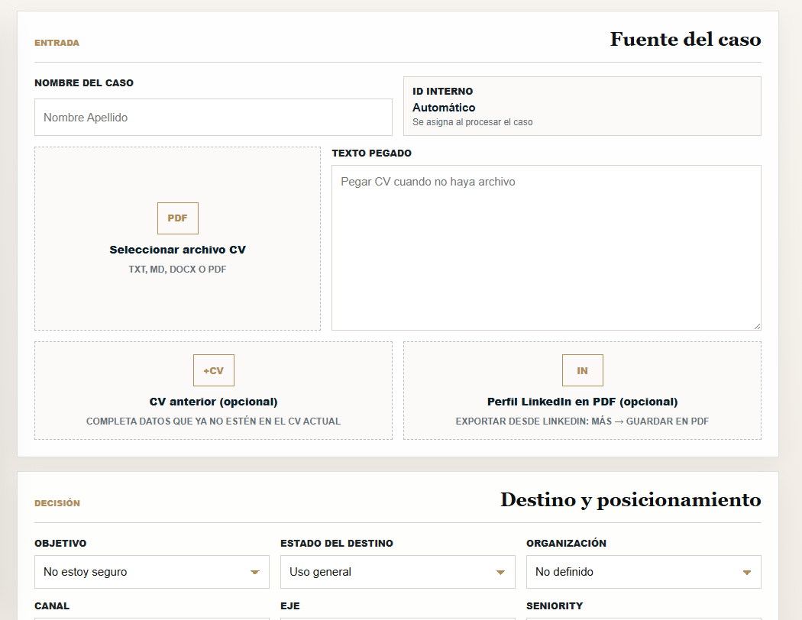

01 / Producto
VAL-CV Intelligence
Primer producto vertical de Nortiqa Lab. Convierte CVs dispersos en un perfil master comparable, con diagnóstico de calidad e historial por caso.
Abrir el MVP → Ver el resto
Interfaz real · nortiqalab.com/val-cvEstado
MVP funcional. Ya se puede abrir.
El formateador ya corre en nortiqalab.com/val-cv. Lo usamos para validar flujo, salida documental y aprendizaje del sistema antes de una versión comercial.
No es un parser genérico de CVs. Es un flujo con plantilla master, brechas detectadas y criterio reutilizable después de cada corrección.
Normalización Diagnóstico Trazabilidad Control humanoPor qué importa
Menos retrabajo. Más consistencia.
El costo real no es leer un CV. Es volver a armar el mismo entregable, con otro criterio, en cada proceso.
- 01
Tiempo de normalización
Reduce la conversión manual de formatos, estilos y huecos entre candidatos.
- 02
Comparación justa
Misma plantilla master para selección, consultoría o marca profesional.
- 03
Aprendizaje del sistema
Las correcciones quedan como criterio reutilizable, no como comentario perdido en un chat.
- 04
Camino a otros documentos
El mismo patrón sirve después para expedientes, minutas y entregables repetibles.
Siguiente paso
Probarlo sobre casos reales.
Si tenés un flujo de CVs, armamos un piloto controlado: entrada, plantilla, diagnóstico y responsable de validación.
Proponer un piloto ↗ hola@nortiqalab.com →